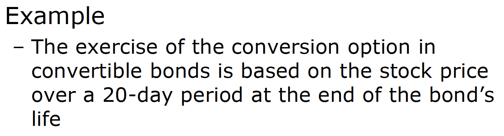

Week 14 - Exotic options
Exotic options
Nonstandard options
Exotic options solve particular business problems that an ordinary option do not.
They are often constructed by tweaking ordinary options in minor ways.
Relavant questions
How does the exotic payoff compare to that of a standard option?
Can the exotic option be approximated by a portfolio of other options?
Is the exotic option cheap or expensive relative to standard options?
What is the rationale for the use of the exotic option?
How easily can the exotic option be hedged?
Asian options
The payoff of an Asian option is based on the average price over some period of time
- path dependent
Situations when Asian options are useful
- When a business cares about the average exchange rate over time
- When a single price at a point in time might be subject to manipulation
- When price swings are frequent due to thin markets

Asian options are less valuable than otherwise equivalent ordinary options, since the average price of the underlying asset is less volatile than the asset price itself.
There are eight(\(2^3\)) basic kinds of Asian options:
- put or call
- geometric or arithmetic average
- Average asset price is used in place of underlying price or the strike price
Arithmetic versus geometric average:
Suppose we record the stock price every h periods from t = 0 to t = T
Arithmetic average:
\[ A(T) = \frac{1}{N}\sum_{i = 1}^{N}{S_{ih}} \]
Geometric average:
\[ G(T) = (S_h \times S_{2h} \times \Lambda \times S_{Nh})^{1 / N} \]
Average used as the asset price: Average price option
- Geometric average price call = max[0, G(T) - K]
- Geometric average price put = max[0, K - G(T)]
Average used as the strike price: Average strike option
- Geometric average strike call = max[0, \(S_T - G(T)\)]
- Geometric average strike put = max[0, \(G(T) - S_T\)]
All four options above could also be computed using arithmetic average instead of geometric average.
Relative simple pricing formulas exist for pricing European options on the geometric average but not for arithmetic average options.

Barrier options
The payoff depends on whether over the option life the underlying price reaches a specified level, called the barrier
- path-dependent
- Since barrier puts and calls never pay more than standard puts and calls, they are no more expensive than standard puts and calls
- Widely used in practice
Barriers puts and calls
Knock-out options
go out of existence (are “knock-out”)
- down-and-out: if the asset price falls to reach the barrier
- up-and-out: if the asset price rises to reach the barrier
Knock-in options
Come into existence (are “knock-in”)
- Down-and-in: if the asset price falls to reach the barrier
- up-and-in: if the asset price rises to reach the barrier
The important parity relation for barrier options is
- Knock-in option + knock-out option = ordinary option
Rebate options: make a fixed payment if the asset price reaches the barrier
- down rebates: if the asset price falls to reach the barrier
- up rebates: if the asset price rises to reach the barrier


Compound options
An option to buy an option

Gap options
A gap call option pays \(S - K_1\) when \(S > K_2\)
The value of a gap call is
\[ C(S, K_1, K_2, \sigma, r, T, \delta) = Se^{-\delta T}N(d_1) - K_1e^{-rT}N(d_2) \]
where
\[ d_1 = \frac{\ln{(S / K_2)} + (r - \delta + \frac{1}{2}\sigma^2)T}{\sigma \sqrt{T}}, d_2 = d_1 - \sigma \sqrt{T} \]


Exchange options
Pays off only if the underlying asset outperforms some other asset (benchmark) → out-performance option
exercise price도 바뀜
The value of a European exchange call is
\[ C(S, K, \sigma, \delta_K, T, \delta_S) = Se^{-\delta_S T}N(d_1) - Ke^{-\delta_K T}N(d_2) \]
where
\[ d_1 = \frac{\ln{(Se^{-\delta_S T} / Ke^{-\delta_K T}) + \frac{1}{2}\sigma^2 T}}{\sigma \sqrt{T}}, d_2 = d_1 - \sigma \sqrt{T}, \sigma = \sqrt{\sigma_S^2 + \sigma_K^2 - 2p\sigma_S\sigma_K} \]